Graficación
Para hacer gráficas en Python existen una gran cantidad de librerías disponibles, como Numpy, vista anteriormente para el tratamiento de datos. Aunque hay un amplio abanico de opciones, sin duda la más utilizada por todo el ámbito científico es matplotlib.
¿Qué es matplotlib?
Matplotlib es una biblioteca completa para crear visualizaciones estáticas, animadas e interactivas en Python. Aunque con el tiempo ha sido superada visualmente por otras librerías más atractivas e interactivas (seaborn o ggplot2), el conocimiento y empleo de esta librería sigue siendo el más extendido.
El paquete matplotlib es relativamente grande y complejo, y entre otros contiene dos módulos principales: pyplot y pylab.
- pyplot. Esta interfaz generalmente se prefiere para la graficación no interactiva (es decir, secuencias de comandos).
- pylab. Esta interfaz es conveniente para cálculos y graficación interactiva, ya que minimiza la escritura. Utiliza funcionalidades combinadas de pyplot y NumPy.
Instalación
En primer lugar debe instalar el paquete matplotlib. Para ello, como se explicó en el apartado PyCharm, vaya a la ventana de Python Packages e instálelo.
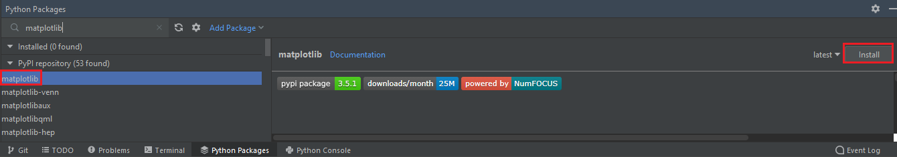
Otra opción sería utilizar el siguiente comando en la consola:
Importación
Para usar la interfaz de matplotlib existen dos formas posibles, en función del módulo que desea emplear:
Creación de figuras
Función plot
La función más simple para crear una figura es la función plot. Esta crea de forma automática la figura y el conjunto de ejes, representando los datos utilizados como argumentos.
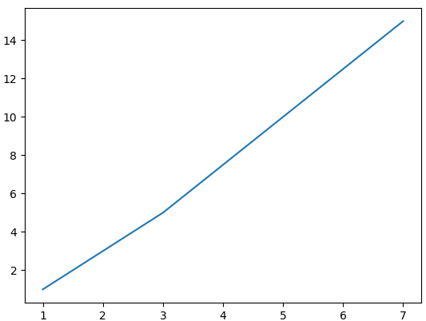
Como puede observar, esta función recibe un conjunto de valores x e y, y los muestra en una figura de líneas.
Al final del argumento es fundamental utilizar la función plt.show() para que el resultado se muestre como una imagen, que la aparecerá en una ventana diferente de PyCharm.
Si desea mostrar en una misma figura varias gráficas, debe utilizar la función plot las veces que sean necesarias antes que la función show. Veamos un ejemplo:
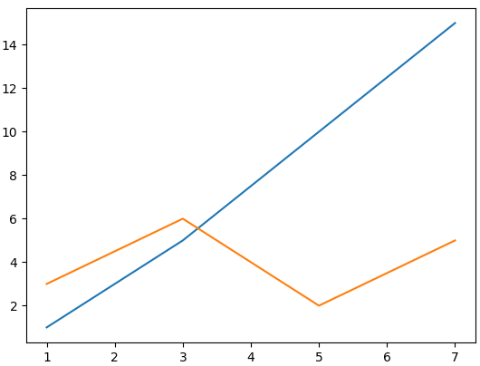
Datos aleatorios
Para practicar en la creación de gráficas, lo mejor es utilizar una serie de datos aleatorios. Para esto puede utilizar NumPy de la siguiente forma:
Formato a la gráfica
Para modificar el estilo de las líneas de la gráfica utilice el parámetro linestyle. Como ha visto, por defecto es una línea continua, aunque puede cambiarlo por ejemplo por una línea discontinua:
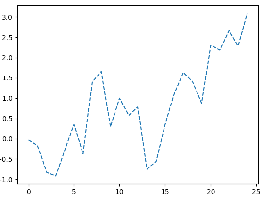
En el argumento, en lugar de utilizar "--" pruebe otros como "-.", "dashdot", ".", "dotted".
También puede modificar el ancho de las líneas con el parámetro linewidth, mostrar los puntos que unidos por líneas con el parámetro marker y modificar el tamaño de estos puntos con el parámetro markersize.
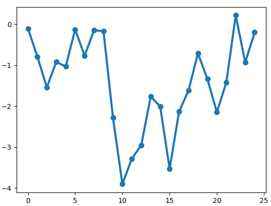
Existen una gran cantidad de marcadores posibles en lugar del clásico punto. Puede encontrar una lista en el siguiente enlace.
Personalización del marcador
Al igual que markersize, existen una serie de parámetros que permiten modificar el marcador. Si le interesa, busque información acerca de la función y empleo de estos parámetros.
Destacan: markeredgewidth, markeredgecolor y markerfacecoloralt.
A estas alturas del apartado, seguro que se ha preguntado cómo cambiar el color de las gráficas. El parámetro color es el utilizado para esto, y admite varios formatos:
- Utilizar el nombre: "blue", "orange", "green"...
- Utilizar el carácter asociado al color: "b", "o", "g"...
- Utilizar la cadena de texto asociado al color: "FF0000", "008000"...
- Color web.
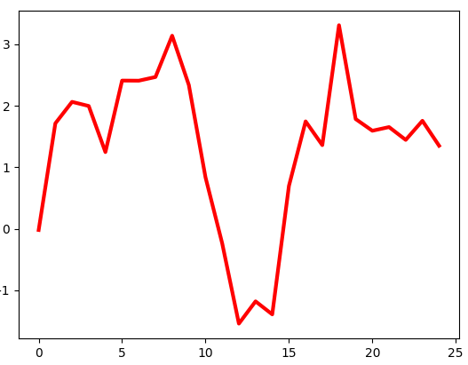
Como sabe, es fundamental que una gráfica muestre una leyenda indicando qué representa. Para ello debe utilizar el parámetro label y la función legend:
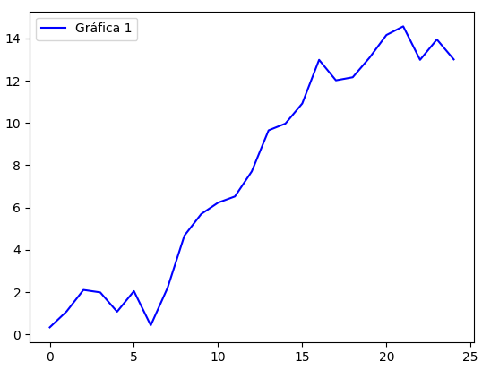
Con la función plot se crean tanto una figura como un conjunto de ejes, aunque la función no nos permite personalizarlos. Como alternativa a esta función, existe una función que permiten mayor grado de personalización y que es combinable con la función plot:
Función subplots
La función subplots devuelve una referencia a la figura y al conjunto de ejes, creando por defecto un único conjunto de ejes si no se especifica. Veamos cómo se emplea esta función:
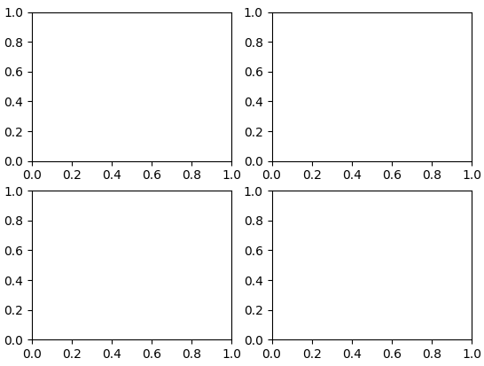
De esta forma se han creado cuatro conjuntos de ejes (una matriz 2x2). Ahora podríamos utilizar la función plot asociada a cada uno de estos ejes de forma independiente:
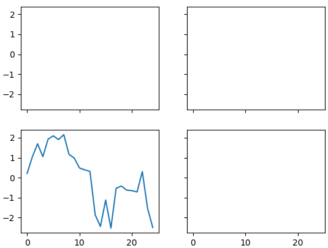
Formato a la figura
- Título. Para insertar un título a la figura se utiliza la función title.
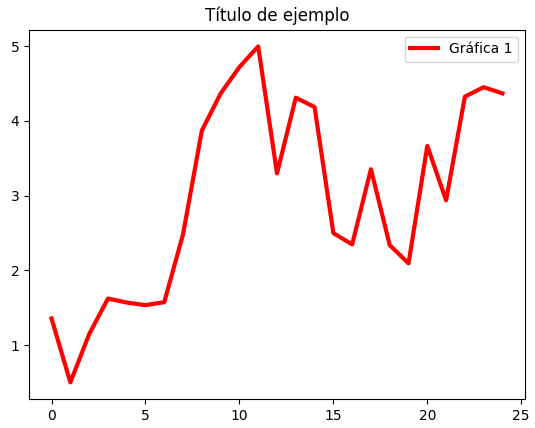
Este título permite un amplio grado de personalización, consulte el siguiente enlace para obtener más información.
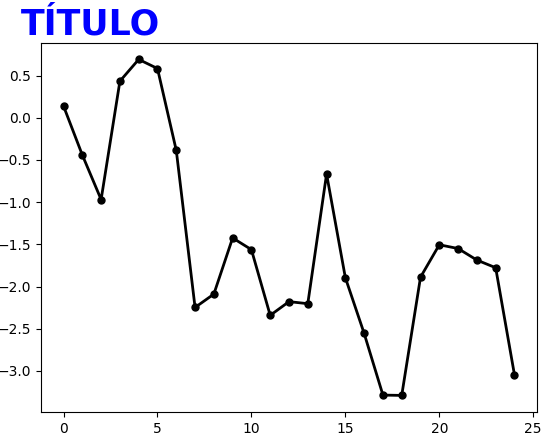
- Etiquetas de ejes. Para añadir etiquetas a los ejes utilice la función xlabel y función ylabel.
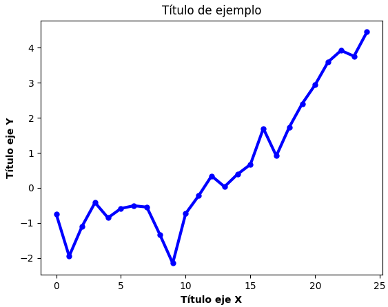
Estas funciones nos permiten utilizar atributos adicionales similares a los utilizados en la función title.
- Marcas de ejes. Existen diferentes formas de cambiar los valores de los ejes. Una de las más útiles es la función xticks y función yticks.
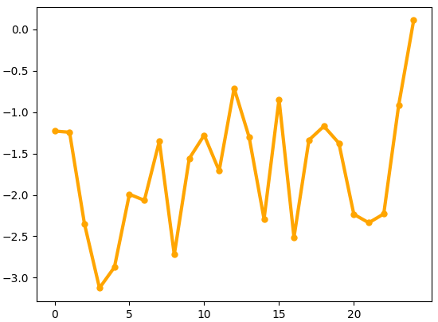
Marcas de los ejes
Otra función muy utiilzada para cambiar los valores de los ejes es la función lim. Puede buscar información acerca de ella, aunque se utiliza de forma muy similar a la función ticks.
- Grid/Rejilla. En muchas ocasiones necesitará mostrar la rejilla en la figura para que sea más fácil la visualización de los datos. Para ello utilice la función grid.
Ejemplo resumen
A continuación se muestra un ejemplo que combina la mayoría de los elementos vistos hasta el momento.
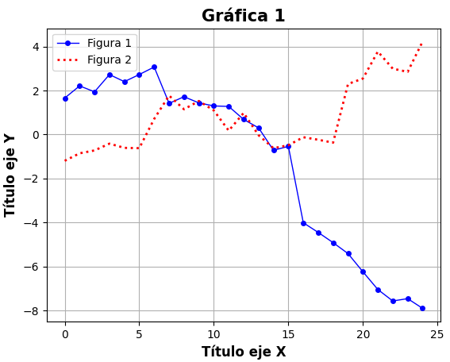
Otras figuras
Hasta el momento se ha trabajado con figuras de líneas, aunque Matplotlib permite trabajar con muchas más figuras. Tenga en cuenta que muchos de los atributos y parámetros vistos hasta el momento con la función plot se emplean del mismo modo.
- Scatter/Dispersión. Para crear un gráfico de dispersión utilice la función scatter.
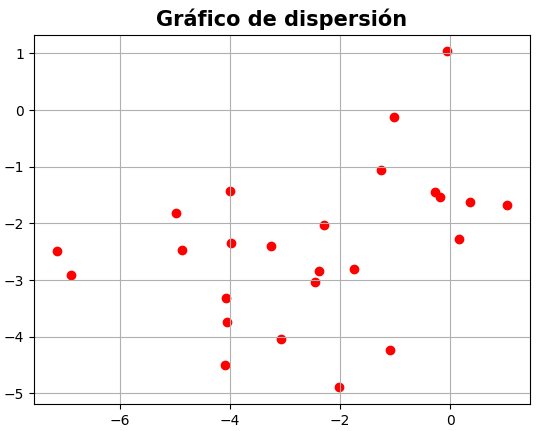
- Áreas. Para crear un gráfico de áreas utilice la función fill_between.
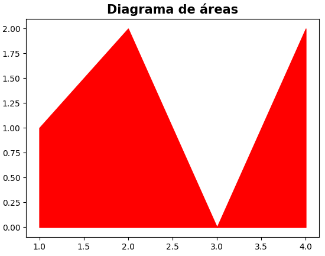
- Barras. Para crear un gráfico de barras utilice la función bar.
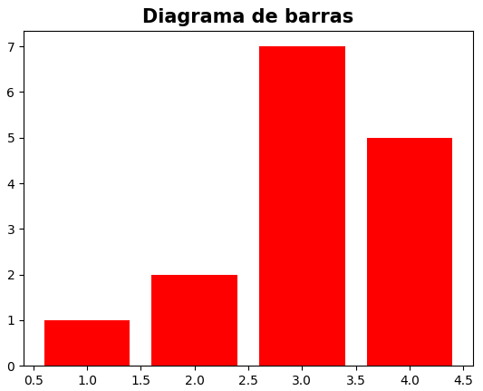
Diagrama de barras
Si desea un diagrama de barras horizontales en lugar de verticales, uticile la función barh de forma similar a la función bar.
- Histograma. Para crear un histograma utilice la función hist. Dentro de un histograma, hay diferentes parámetros interesantes a modificar:
- bins: modificar el número de barras de nuestro histograma.
- range: controla los valores mínimos y máximos en el histograma.
- orientation: puede tomar los valores horizontal o vertical, y determina la orientación del histograma.
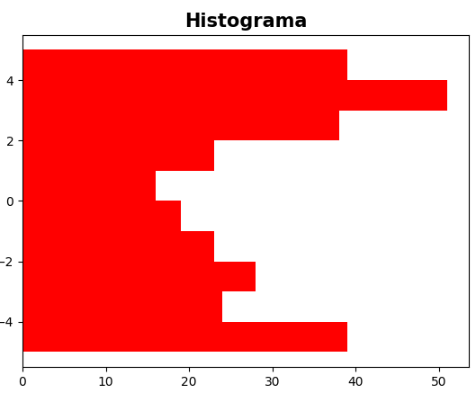
- Diagrama de sectores. Para crear un diagrama de sectores utilice la función pie. Al igual que en el histograma, existen parámetros que debe manejar:
- Labels. Asocia los sectores a sus etiquetas correspondientes.
- Autopct. Muestra los porcentajes representados por cada sector.
- Pctdistance. Distancia del número al centro del gráfico.
- Colors. Permite especificar los colores de los sectores.
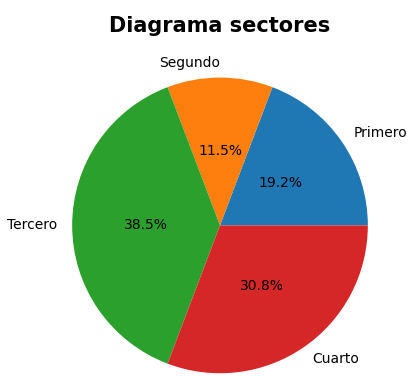
- Mapa de colores. Para crear un mapa de colores a partir de una matriz utilice la función imshow.
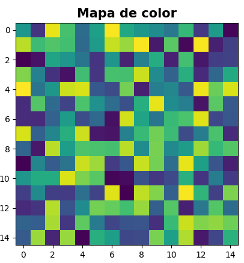
Exportación de gráficas
Después de crear las figuras, Python nos permite diferentes modos para poder guardarlas:
- Desde PyCharm. Como habrá observado, en todas las salidas de imagen aparece un botón para poder guardar las figuras.
- savefig(). Desde la propia línea de comandos se puede guardar la imagen en el directorio de trabajo o en otro directorio específico:
- imsave(). Se usa de forma similar al anterior. Indica si hay alguna diferencia de comportamiento respecto al anterior
Gráficas avanzadas
Las figuras vistas hasta el momento son figuras 2D, aunque matplotlib nos permite también crear figuras 3D. A continuación se muestra un ejemplo de este tipo de gráficas, de las que puede profundizar en el siguiente enlace.
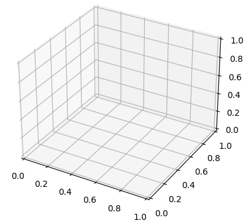
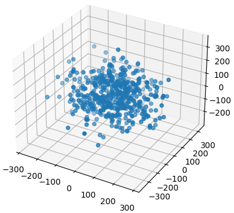
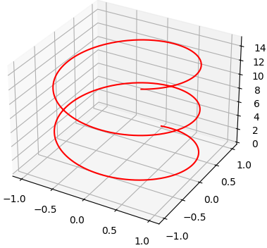
Ejercicios
En este apartado de ejercicios le vamos a introducir a los cuadernos de Python.
Como viene utilizando hasta el momento, la forma tradicional de crear un programa en Python es crear un archivo .py que almacene el código fuente de dicho programa. En este caso, en lugar de utilizar esto utilizaremos un cuaderno de Google colab.
Los cuadernos en lenguaje de programación (normalmente conocidos como notebook) permiten combinar texto y código, siendo muy útiles para documentar nuestro trabajo a la vez que probamos código fácilmente. Otro de los cuadernos más utilizados en Python es Jupyter Notebook.
A continuación puede acceder a los ejercicios que se le plantean: Google Colab Notebook.